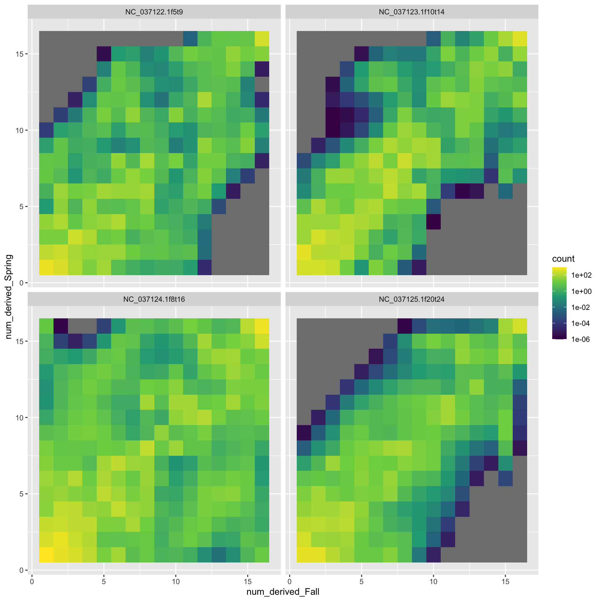

# do this on a compute node or acompile
mamba create -n angsd bioconda::angsd16 Estimating Site Frequency Spectra and a few applications thereof
16.1 What is the SFS?
- Typically the fraction of sites in a sample of \(n\) diploids that carry \(1, \ldots, 2n-1\) copies of the derived (as opposed to the ancestral) allele.
- With whole genome sequencing data, we can also include the categories of 0 and \(2n\) copies of the derived alleles.
16.2 Why is it useful?
- A lot of population genetic theory has been done about what the SFS should look like under different demographic scenarios and/or selection.
- Many population genetic summary statistics can be shown to be functions of the SFS. A worthy read about how nearly all the myriad simple tests for non-neutrality (Tajima’s \(D\), Fay and Wu’s \(H\), etc.) can be written as functions of the SFS is Achaz 2009.
- Programs exist (\(\partial a \partial i\), moments, etc.) to use SFS (and particularly multi-dimensional—i.e. multi-population—SFS) to estimate demographic history of species.
- Pairswise \(F_\mathrm{ST}\) between populations can be computed as a function of the 2-D SFS.
- The SFS provides an exceptional amount of data reduction: from terabytes of sequencing data to a handful of numbers. Obviously this discards a lot of information, but for some inferences, the SFS is sufficient or nearly so.
16.3 More on the SFS itself with simple examples
- Illustrate on the whiteboard with a simple data set assuming fully resolved genotypes.
- Discuss the \(\theta/k\) result from the neutral coalescent.
- Show how easy it is to estimate SFS with complete and certain genotype data.
- At any site, show that the calculation involves lining the genotypes up horizontally, with the cumulative numbers of gene copies in each, stacked vertically above them.
16.4 Uncertainty in the genotypes
- With low-coverage data we don’t get to observe the genotypes with certainty.
- We don’t even know ahead of time if there is a SNP there.
- So, the ANGSD approach is to first calculate the likelihood of each number of derived alleles, from \(0\) to \(2n\), by considering all the possible underlying genotypes. Storing those results, and then using those to do inference.
- Let’s show what that looks like at a single site on the whiteboard.
16.5 ANGSD doSaf
One of the options to ANGSD is
-doSaf. This creates a “site allele frequency” file, which is a binary file that holds the likelihoods for each site of the number of copies of the derived allele are at that site.Documentation for it is at: https://www.popgen.dk/angsd/index.php/SFS_Estimation
There is also “onboard” documentation with the program itself. So, let us get ANGSD in a conda environment so we can call it. If you don’t already have ANGSD in a conda env, do this:
Once that is done, activate the angsd environment and call the program with the
-doSafoption and nothing else to get the onboard help:# activate the environment mamba create -n angsd bioconda::angsd # call the program with no other args angsd -doSaf
16.6 Running ANGSD doSaf
We are going to run doSaf on our course data (the 16 Chinook salmon from the Trinity River).
As always, before we start doing anything you will want to sync the main branch of your fork of the con-gen-csu repo and then pull changes down to the main branch of the local clone on your cluster.
We are going to run angsd -doSaf within a Snakemake workflow that I have on GitHub. The purpose of the workflow is to compute pairwise \(F_\mathrm{ST}\) between different groups of samples, and doing so requires the -doSaf calculation from ANGSD.
16.6.1 Cloning the workflow
So, the first thing that you will need to do is clone the Snakemake workflow. You can fork it (if you like) and then clone your own flow, OR you could just clone the repo as is. Make sure that you DO NOT clone it into your con-gen-csu directory. Rather, it would be better to clone it into your projects or scratch directory.
Cloning eriqande/mega-lcwgs-pw-fst-snakeflow directly, as opposed to forking it and cloning your fork, would look like this:
# first cd into your projects and scratch directories
git clone git@github.com:eriqande/mega-lcwgs-pw-fst-snakeflow.git16.6.2 Symlinking the results in our con-gen-csu results
For calculating Fst we will use the BAMs that were created when you ran exercise 008. To make this relatively easier to describe (basically so that the same paths will work for all of us regardless of where everyone’s BAM files are) we will use symbolic links, making a symbolic link to your con-gen-csu directory in your home directory, named CGC.
To do this,
navigate inside of your
con-gen-csudirectory,do
pwd.
Copy the resulting absolute path
cdto yourmega-lcwgs-pw-fst-snakeflowdirectoryThen, in that
mega-lcwgs-pw-fst-snakeflowdirectory, do:ln -s absolute-path-to-con-gen-csu CGCbut replace
absolute-path-to-con-gen-csuwith the actual path to yourcon-gen-csudirectory.
For example, when I do this on alpine it looks like:
# here I get the absolute path to con-gen-csu and I copy it
% pwd
/home/eriq@colostate.edu/projects/con-gen-csu
# then I change directories to the mega-lcwgs-pw-fst-snakeflow directory
% cd /home/eriq@colostate.edu/projects/mega-lcwgs-pw-fst-snakeflow/
# then I paste the con-gen-csu path in to do:
ln -s /home/eriq@colostate.edu/projects/con-gen-csu CGC16.6.3 The config for our Trinity River Chinook
We have a config file that will let you use your bams through the CGC alias you just made. The config files to allow the mega-lcwgs-pw-fst-snakeflow to use the bams from the Trinity River Chinook salmon are in the directory extras/lcwgs-pw-fst-config in the con-gen-csu repo, which means that from within the mega-lcwgs-pw-fst-snakeflow directory, you can access it via the relative path CGC/extras/lcwgs-pw-fst-config. The config files within that directory, with links to them on GitHub, are:
config.yaml: the main config file for Snakemake to use.bams.tsv: paths to the BAM files for the 16 Chinook salmon, and group designations (spring or fall)chroms.tsv: summary information about the chromosomes.pwcomps.tsv: description of groups to make pairwise \(F_\mathrm{ST}\) comparisons of.
16.6.4 A Simple Dry run
We can do a simple dry run to see which jobs will be run if we were to do all the steps for calculating \(F_\mathrm{ST}\), including \(F_\mathrm{ST}\) values in sliding windows.
Do the following after getting onto a compute node with four cores, by, for example, doing acompile -n 4 or srun -p atesting -c 4 --pty /bin/bash
Type this in the mega-lcwgs-pw-fst-snakeflow directory
conda activate snakemake-8.5.3
snakemake -np --configfile CGC/extras/lcwgs-pw-fst-config/config.yamlPhew! That spits out a lot of different jobs. Let’s quickly have a look at what that is doing by looking at the rulegraph:

Aha! Most of the jobs are happening after the calc_saf rule, which is what we are focused on.
16.6.5 Only run things as far as the calc_saf rule
This is a good time to talk about a useful option to Snakemake. If you want to only run a workflow up to a certain point, you can provide the --until option, giving it a rule name. So, try:
Type this in
snakemake -np --until calc_saf --configfile CGC/extras/lcwgs-pw-fst-config/config.yamlThat just runs 8 jobs making bamlists (short little jobs) and 8 jobs making SAF files—4 chromosomes in each of two groups.
Let’s see about running all of those:
snakemake -p --use-conda --until calc_saf --cores 4 --configfile CGC/extras/lcwgs-pw-fst-config/config.yamlThat does not take too long.
Let’s check out the size of the resulting files:
tree --du -h results/BY_CHROMWhoa! Those are some pretty big files. For NC_037122.1f5t9 for example, I get 56 M and 64 M for spring-run and fall-run respectively.
Let’s do some thinking about that—NC_037122.1f5t9 is 4 megabases and each group of fish has 8 diploids, so there are \(2 \times 8 + 1 = 17\) possible sample allele frequencies at each base, and each frequency requires 4 bytes to store in memory. Thus we would expect an uncompressed size of this file in megabytes to be:
4e6 * 17 * 4 / 1e6[1] 272But it is only around 60 Mb, and that is because it is compressed, and the compressed size is about 22% of the uncompressed.
16.6.6 Make a picture of part of that file
In order to get a sense of what this file looks like, let’s extract a piece of it and then plot it.
# we can get the first 5000 sites from the saf file using the ANGSD tool
# realSFS
realSFS print results/BY_CHROM/NC_037122.1f5t9/saf/Fall.saf.idx -r NC_037122.1f5t9:1-5000 > fall-first-5k.tsvNow, we have that file in the con-gen-csu repo, so we can have a look at it.
library(tidyverse)
# read in the file
saf <- read_tsv("extras/inputs/fall-first-5k.tsv", col_names = FALSE)
names(saf) <- c("chrom", "pos", 0:16)
# get a version that is not on the log scale
exp_saf <- saf %>% mutate(across(.cols = `0`:`16`, .fns = exp))
# try plotting the natural scale one
saf_long <- exp_saf %>%
pivot_longer(cols = -c(chrom, pos), names_to = "num_derived", values_to = "likelihood") %>%
mutate(num_derived = as.integer(num_derived))
ggplot(saf_long) +
geom_tile(aes(x = num_derived, y = pos, fill = likelihood)) +
facet_wrap(~ as.integer(pos / 500), scales = "free") +
scale_fill_viridis_c()Oh Wow! That is pretty cool! Each facet is 500 bases of the chromosome. The x-axis is number of “derived” alleles in the sample, and the fill color is likelihood. The white bands are omitted bases (likely becuase there are no reads there? or some other feature of the genome there?).
You can download a higher resolution version of that figure from here.
These SAF files form the basis for a lot of further inference, which we address next.
16.7 Installing winsfs
winsfs (which, by the way, stands for “Windowed Site Frequency Spectrum”) is written in the Rust language. It is not available on conda, but it is relatively easy to build. The default instructions to build it are available at https://github.com/malthesr/winsfs?tab=readme-ov-file#installation. If you are not on ALPINE, use those directions.
If you are on ALPINE, however, you want the build chain and other stuff to go in your projects directory, not your home directory (which has very little space in it.)
So, if you are on ALPINE you want to follow these steps: first, from a fresh shell and in your home directory, define the environment variables CARGO_HOME and RUSTUP_HOME to be the absolute path to your projects directory. (Otherwise, the rust build chain will eat up all the space in your scrawny home directories).
# do this on acompile
acompile
export CARGO_HOME=/projects/eriq@colostate.edu
export RUSTUP_HOME=/projects/eriq@colostate.eduThen we want to put the build chain there, so we do:
curl --proto '=https' --tlsv1.2 -sSf https://sh.rustup.rs | shThat should tell you that it will install everything into your projects directory. Hit ENTER to agree to continue installing. (It looks like you should choose 1, but you actually want to just hit ENTER…)
That take a minute or two, but should finish, eventually.
Now, we need to set up the environment
source $CARGO_HOME/env
# and then just to be on the safe side, you should do:
source ~/.bashrcThat should be it for getting the build chain, so now you should be able to get winsfs:
cargo install winsfs-cliWhen that is done, do which winsfs to confirm where it was built and placed.
Then, do winsfs --help to get the help info.
16.8 Back to lcwgs-pw-fst
If you go back to the shell where you were working on the mega-lcwgs-pw-fst-snakeflow workflow, you will want to source ~/.bashrc to get the path to winsfs, and then you will want to get back onto atesting for working further on this.
srun -p atesting -c 4 --pty /bin/bash
# after you get into that, check to make sure winsfs is available
winsfs16.9 Calculating some 1-D SFSs
Both realSFS from angsd and winsfs operate similarly for this, but give somewhat different results. If you pass either of them an saf.idx file, they will do the optimization to return a maximum likelihood estimate of the SFS from all the sites in the file.
16.9.1 Let’s do it by hand
# activate your angsd env
conda activate angsd
# learn about realSFS options
realSFS
# run realSFS on one of the SAF files we made previously
realSFS -cores 4 results/BY_CHROM/NC_037122.1f5t9/saf/Fall.saf.idxThat takes a bit of time, so we can talk about what it is doing. Note that most of the stuff being written to the screen is going to stderr. The part that goes to stdout is just the line:
3737572.635705 1561.211911 927.350151 465.278375 438.794388 56.110069 390.037928 89.693553 308.188647 21.118673 0.011756 254.166472 79.952746 1.729683 85.879451 134.411897 296.428594Now, for comparison, let’s do that same thing with winsfs:
winsfs -t 4 results/BY_CHROM/NC_037122.1f5t9/saf/Fall.saf.idxThat happens so fast that you don’t even have time to talk about it!
The output is:
#SHAPE=<17>
3737470.683161 1625.494654 932.293365 540.814038 412.352881 142.438646 287.406187 128.243713 226.198641 65.924898 65.140087 153.462124 110.387933 45.092476 49.428736 148.862580 278.775880Which is pretty much the same, except it has the added feature of telling us how many values are in the SFS.
And, reactivate your snakemake environment
conda activate snakemake-8.5.316.9.2 Let’s calculate all the 1-D SFS using the snakemake workflow
You will need to get the latest update of the mega-lcwgs-pw-fst-snakeflow workflow by syncing your fork (if you have forked it) and then pulling into main.
I have set up two new rules to calculate 1-D SFS in the workflow—not becuase they are needed for calculating Fst, but just for our own edification.
You can run the workflow and get those outputs using:
# check with a dry run:
snakemake -np --use-conda --cores 8 dest_edify_1d --configfile CGC/extras/lcwgs-pw-fst-config/config.yaml
# if that looks good, do it with:
snakemake -p --use-conda --cores 8 dest_edify_1d --configfile CGC/extras/lcwgs-pw-fst-config/config.yamlI have copied the results to the course repo so that we can plot them all:
files <- dir(
path = c(
"extras/lcwgs-pw-fst-results/one_d_realSFS",
"extras/lcwgs-pw-fst-results/one_d_winsfs"
),
full.names = TRUE
)
names(files) <- files
big_tibble <- lapply(
files,
function(x) {
lines <- read_lines(x)
counts = as.numeric(str_split(lines[length(lines)], pattern = " +")[[1]])
counts <- counts[!is.na(counts)]
tibble(
num_derived = 0:16,
count = counts
)
}) %>%
bind_rows(.id = "file") %>%
extract(
file,
into = c("method", "chrom", "ecotype"),
regex = "^.*one_d_([a-zA-Z]+)/(.+)---(.+)\\.ml"
)
# remove the 0 category, cuz it be huge, then plot
big_tibble %>%
filter(num_derived > 0) %>%
ggplot(aes(x = num_derived, y = count, fill = ecotype)) +
geom_col() +
facet_grid(chrom ~ ecotype + method)We see that the results from winsfs are less choppy. This is what the authors of the Rasmussen et al. paper meant when they said that the winsfs approach is less prone to overfitting.
Remember that these are unfolded SFSes where we used the reference genome as the “ancestral” genome.
16.10 Running the rest of the Fst workflow
We can let this thing rip with:
# check it with a dry run
snakemake -np --use-conda --cores 8 --configfile CGC/extras/lcwgs-pw-fst-config/config.yaml
# Let 'er rip
snakemake -p --cores 8 --use-conda --configfile CGC/extras/lcwgs-pw-fst-config/config.yamlWhile this is running we can look over the steps of the workflow. Basically, they are:
- Calculate the MLE of the 2-D SFS for each pair of populations (just Fall and Spring here). This is done in
rule calc_2dsfs_winsfs. - Fold the resulting 2-D sfs to reflect that we don’t know the ancestral state. Done in
rule fold_winsfs - Use that MLE of the 2-D SFS as a prior to calculate the posterior number of derived alleles in each population at each base pair and from that, calculate a summary value related to Fst for each base pair. (Done using realSFS in
rule calc_fst_binaries_winsfs) - From those summaries at each site, extract a single Fst value for each chromosome. (Done in
rule extract_fst_values_winsfs) - From those summaries at each site, calculate Fst in a sliding window for each chromosome. (Done in
rule sliding_window_fst_winsfs) - Summarize all that output into just a couple of files, (Done in
rule summarise_average_fst_valuesandrule summarise_sliding_window_fst_values)
16.10.1 Plotting the Sliding Windows
windows <- read_table(
"extras/lcwgs-pw-fst-results/summarized/sliding_window_fst/Fall--x--Spring--size-30000--step-5000.tsv",
col_names = FALSE,
skip = 2) %>%
filter(!str_detect(X1, "region")) %>%
rename(
chrom = X2,
window_mid = X3,
Fst = X5
)
── Column specification ────────────────────────────────────────────────────────
cols(
X1 = col_character(),
X2 = col_character(),
X3 = col_double(),
X4 = col_double(),
X5 = col_double()
)ggplot(windows, aes(x = window_mid, y = Fst)) +
geom_point(size = 0.2) +
facet_wrap(~ chrom)files <- dir(
path = c(
"extras/lcwgs-pw-fst-results/NC_037122.1f5t9/winsfs",
"extras/lcwgs-pw-fst-results/NC_037123.1f10t14/winsfs",
"extras/lcwgs-pw-fst-results/NC_037124.1f8t16/winsfs",
"extras/lcwgs-pw-fst-results/NC_037125.1f20t24/winsfs"
),
full.names = TRUE
)
names(files) <- files
big_tibble <- lapply(
files,
function(x) {
lines <- read_lines(x)
counts = as.numeric(str_split(lines[length(lines)], pattern = " +")[[1]])
counts <- counts[!is.na(counts)]
tibble(
num_derived_Fall = rep(0:16, 17),
num_derived_Spring = rep(0:16, each = 17),
count = counts
)
}) %>%
bind_rows(.id = "file") %>%
extract(
file,
into = c("chrom"),
regex = "^.*(NC_[^/]+)/.+$"
)
# remove the 0 category, cuz it be huge, then plot
big_tibble %>%
filter(num_derived_Fall > 0 & num_derived_Spring > 0) %>%
ggplot(aes(x = num_derived_Fall, y = num_derived_Spring, fill = count)) +
geom_tile() +
facet_wrap(~ chrom) +
scale_fill_viridis_c(trans="log10")Warning: Transformation introduced infinite values in discrete y-axis